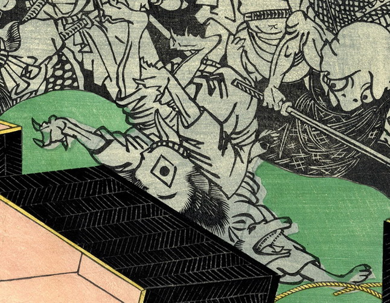

逆さに転げ落ちる化物。菱形の一つ目で、長い舌を出している。指先には鋭い爪が生えている。
著作者：芳盛／出典：親書誌：U426_nichibunken_0228：昔ばなし舌切雀；ムカシバナシシタキリスズメ／日付：2010／資源識別子：U426_nichibunken_0228_0009_0000
Copyright (c)2010- International Research Center for Japanese Studies, Kyoto, Japan. All rights reserved.